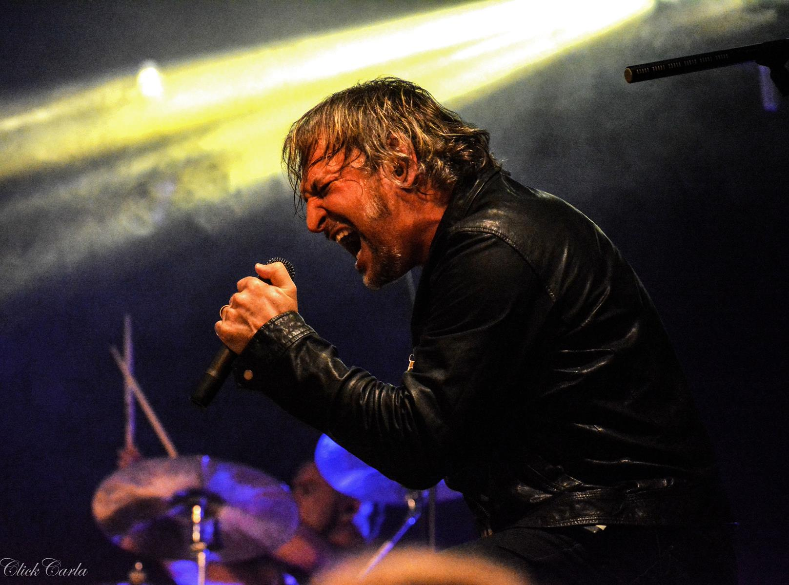

Oficina G3
Oficina G3 é uma banda brasileira de Rock e Metal, com temáticas cristãs, formada na cidade de São Paulo em 1987. Fundada por Juninho Afram, Wagner García, Walter Lopes, Túlio Régis e Luciano Manga, no fim da década de 1980, o conjunto passou por vários subgêneros do rock e formações. Juninho é o membro mais antigo e o único da formação original a participar de todos os discos lançados pela banda.[1] A banda já venceu e foi indicada, por várias vezes, em premiações como os troféus Talento, Promessas e Grammy Latino, por suas produções. Na época em que o conjunto começou, o rock ainda tinha forte resistência em igrejas cristãs brasileiras, mesmo com certas bandas no início da década de 1980, como o Rebanhão, a se destacar no mainstream da cena religiosa. A partir da década de 1990, juntamente com as bandas Catedral, Resgate, Katsbarnea e Fruto Sagrado, Oficina G3 se tornou ícone do incipiente gênero do rock cristão brasileiro, tornando-se conhecida entre os admiradores desse estilo no país. Apesar de, em parte, seus integrantes terem sido rejeitados por muitos pastores e lideranças religiosas, o visual da banda, com integrantes tatuados e de cabelos compridos, em geral sempre atraiu o público jovem adepto ao cristianismo. Em 1997, o vocalista Luciano Manga deixa a banda e entra, em seu lugar, PG. Nesta época, parte do apelo de "banda de rock pesado" foi deixado de lado e o grupo passou a ter um estilo mais guiado pelo pop rock. Foi a fase de sua maior popularidade, principalmente após a assinatura com a gravadora MK Music. Após a saída do cantor em 2003, o Oficina G3 voltou a ter como estilo predominante outras variações do rock, mais especificamente o progressivo. No álbum Além do que os Olhos Podem Ver, os vocais foram assumidos pelo guitarrista Juninho Afram. Com a obra, a banda vendeu vinte mil cópias em três dias, alcançando disco de ouro posteriormente. Em 2008 o grupo lançou Depois da Guerra, o primeiro de Mauro Henrique como novo vocalista. O álbum venceu o Grammy Latino de Melhor Álbum de Música Cristã em Língua Portuguesa em 2009. Histórias e Bicicletas (Reflexões, Encontros e Esperança), de 2013, é o trabalho mais recente de sua discografia. Sua última formação contou com quatro integrantes: Juninho Afram (vocal e guitarra), o qual é o líder e único integrante da formação original, Duca Tambasco (baixo e vocal), Jean Carllos (teclado e vocal) e Mauro Henrique (vocal e violão). Os músicos são reconhecidos por suas proficiências em seus instrumentos, estando frequentemente presentes em matérias de revistas especializadas em música. Em setembro de 2017, a banda anunciou um hiato e fez seu último show em 2018. Em 2020 a banda ainda em hiato lançou o single “Cego" o último trabalho de Mauro Henrique no vocal. Em 2022, após cinco anos em hiato, a banda anuncia a turnê Humanos Tour, para comemorar os vinte anos do lançamento do álbum Humanos.
Albuns
- Nada É Tão Novo, Nada É Tão Velho - 1993
- Indiferença - 1996
- Acústico - 1998
- O Tempo - 2000
- Humanos - 2002
- Além Do Que Os Olhos Podem Ver - 2003
- Elektracustika - 2007
- Depois Da Guerra - 2008
- Histórias E Bicicletas - 2013
Músicas polulares
- Aos Pés Da Cruz
- O Tempo
- João
- Novos Céus
- Depois da Guerra
Gostou? Ouça as músicas no Youtube: Oficina G3